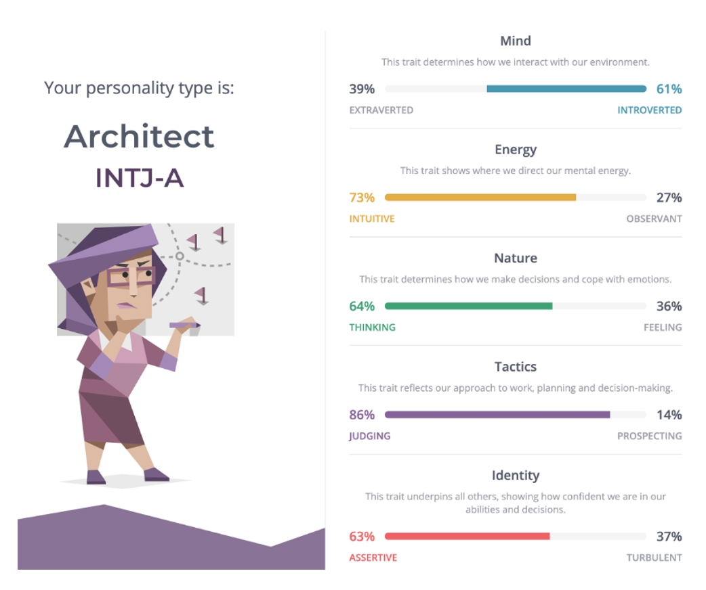
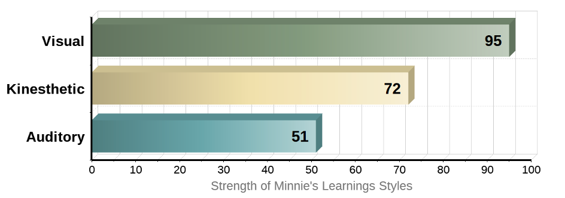
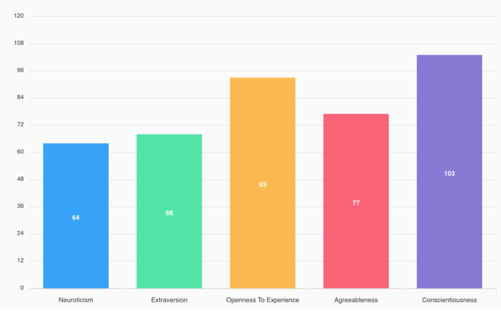

MBTI Test

INTJ-A
- Independent
- Confident
- Happy alone
- Goal oriented
- Problem solvers
- Finish given tasks on time
- workaholic
I was aware of that I am not a social/party person. It confirmed my thought, which made me worried about finding a group for my following assessment.
My strategy to overcome my weakenss is to focus on the goal and assessment deadlines.
It might take longer time to be a friend. However, I can work with people who have different professional and personal background. I do not have a trouble doing a team project as long as we have common goal and interests.
Online Learning Style

Visual - Kinesthetic
- Not really talkative
- Attention to details
- Like to read
- Remember better by seeing charts, diagrams
I am aware of my learming style - a visual and kinesthetic learner. I get annoyed by sounds easily. Therefore, I put my celler phone on mute most of days. My cell-phone is to make calls when I need. For example, I put mute on YouTube and prefer to read the subtitle if it is possible.
It is important to let my teammates know and set up better communication channel.
I am a 'do' person rather than 'talk'. I would like to have short meetings and more time doing tasks. When I do not talk at the group meetings, my team needs to understand that I am listening, just not talking. I would not answer unless someone asks my opinion.
Big 5 Personality Test

I get tired when I have to interact with others too long without topic. If I find a group / peopl with same interests, I can be very talkative and interative.
I can be inpatient when I have got things to do in my mind. Most of time, I am confidence and perform well under pressure. When I know I am struggling, I yell out for help quickly.
Love learning new knowledges and skills, and participating activities. However, I prefer something can be done as a 'solo' instead of a group work or group sports.
I need my own space and time while I need high stimulation. It might confuse many people because people do not know when I need my own space or stimulation.
From the work perspective, I prefer all organized and planed well. However, I prefer no plan for my life. I love spotanous travelling, activities and migration.
| Neuroticism LOW |
Extraversion LOW |
Openness HIGH |
Agreeableness HIGH |
Conscientiousness HIGH |
| Generally calm and fearless |
Need privacy & personal space |
Imagination, Fantasy, Adventure, Intellect |
Frank, Straightforward |
Confidence in one's ability |
| Self-fulfilling high |
Fast-paced and energetic life |
Love art and nature |
Cooperation, Compromise |
Well-organized To-do list Plan |
| Clear-thinking when stressed |
Need high levels of stimulation |
Not express emotions |
Can be arrogant |
Self-discipline to overcome troubles to achieve goals |